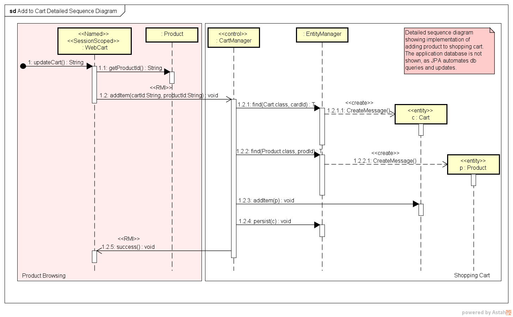

Figure 7: Levels within the C4 model (figure 2.1 from [7]).
Understanding software is hard. It is often claimed that reading code is harder than writing code1. This principle is used to explain a programmers’ innate desire to constantly rewrite their code from scratch. If software is hard to understand, then software architecture is near impossible. Fortunately, architects have developed a number of techniques to manage this complexity.
A software architecture consists of many dimensions. Programming languages, communication protocols, the operating systems and hardware used, virtualisation used, and the code itself are a subset of the many dimensions which comprise a software architecture. Asking a programmer’s monkey brain to understand, communicate, or document every dimension at once is needlessly cruel. This is where architectural views come in.
Architectural views, or architectural projections, are a representation of one or more related aspects of a software architecture. Views allow us to focus on a particular slice of our multi-dimensional software architecture, ignoring other irrelevant slices. For example, if we are interested in applying a security patch to our software then we are only interested in the view which tells us which software packages are used on each host machine.
The successful implementation of any architecture relies on the ability for the architectural views to be disseminated, understood, and implemented. For some organisations, the software is simple enough, or the team small enough, that the design can be communicated through word of mouth. As software becomes increasingly complex and developers number in the thousands, it is critical for design to be communicated as effectively as possible. In addition to facilitating communication, architectural views also enable architectural policies to be designed and implemented.
Philippe Kruchten was one of the earliest to advocate the idea of using views to design and document software architectures. In “4+1 View Model of Software Architecture” [3] he describes five different views. These are logical, process, development, physical, and scenario views, which are summarised below.
Logical
How functionality is implemented, using class and state diagrams.
Process
Runtime behaviour, including concurrency, distribution, performance and scalability. Sequence, communication and activity diagrams are used to describe this view.
Development
The software structure from a developer’s perspective, using package and component diagrams. This is also known as the implementation view.
Physical
The hardware environment and deployment of software components. This is also known as the deployment view.
Scenario
The key usage scenarios that demonstrate how the architecture delivers the functional requirements. This is the ‘+1’ view as it is used to validate the software architecture. This is also known as the use case view, as high-level use case diagrams are used to outline the key use cases and actors.
The experience which led to the development the 4+1 View Model was developing the air traffic control management system for Canada. The system provides an integrated air traffic control system for the entire Canadian airspace. This airspace is about double the size of the Australian airspace and borders the two busiest airspaces in the world. The project’s architecture was designed by a team of three people led by Philippe. Development was done by a team of 2500 developers from two large consulting companies. The project was delivered on-time and on-budget, with three incremental releases in less than three years2. This project also developed many of the ideas that led to the Rational Unified Process [5].
The seminal architecture book, Software Architecture in Practice [6], categorises architectural views into three groups. These three groups each answer different questions about the architecture, specifically:
Module Views
How implementation components of a system are structured and depended upon.
Component-and-connector Views
How individual components communicate with each other.
Allocation Views
How the components are allocated to personnel, file stores, hardware, etc.
Module views are composed of modules, which are static units of functionality such as classes, functions, packages, or whole programs. The defining characteristic of a module is that it represents software responsible for some well-defined functionality. For example, a class which converts JSON to XML would be considered a module, as would a function which performs the same task.
The primary function of module views is to communicate the dependencies of a module. Rarely does software work completely in isolation, often it is constructed with implicit or explicit dependencies. A module which converts JSON to XML might depend upon a module which parses JSON and a module which can format XML. Module views make these dependencies explicit.
Module views focus on the developer’s perspective of how the software is implemented, rather than how it manifests itself when deployed in a computing environment.
1import json 2import xml 4class JSONtoXML: 5 def load(self, json_file): 6 with open(json_file) as f: 7 data = json.load(f) 8 self.data = self.convert(data) 10 def export(self, xml_file): 11 xml.write(xml_file, data) 13 def convert(self, data: JSON) -> XML: 14 ...
Component-and-connector views focus on the structures that deliver the runtime, or dynamic behaviour of a system. Components are units which perform some computation or operation at runtime. These components could overlap with the modules of a module view but are often at a higher level of abstraction. The focus of component-and-connector views is how these components communicate at runtime. Runtime communication is the connector of components. For example, a service which registers users to a website might have new registrations communicated via a REST3 request. The service may then communicate the new user information to a database via SQL queries.
When we look at software architecture, component-and-connector views are the most commonly used views. They are common because they contain runtime information which is not easily automatically extracted. Module views can be generated after the fact, i.e. it is easy enough for a project to generate a UML class diagram. (Simple tools will create an unreadably complex class diagram. Tagging important information in the source code, or manually removing small details is required to end up with readable diagrams.) Component-and-connector views are often maintained manually by architects and developers.
According to Bass et al, allocation views map the software’s structures to the system’s non-software structures
[6]. They include concepts such as who is developing which software elements, where are source files
stored for different activities such as development and testing, and where are software elements
executed. The first two points are important for project management and build management.
The last point of how the software is executed on different processing nodes is important for
architectural design. This is sometimes called the
Understanding the physical architecture (simplistically the
hardware4
on which the software is executed) is important when designing the software’s
Sahara5 eCommerce is an ambitious company who’s prime business unit is an on-line store selling a wide range of products. They provide both web and mobile applications to deliver the shopping experience to customers.
Not all requirements for a system will be architecturally significant, but those that are need to be identified. Once ASRs are identified, an architecture needs to be designed to deliver them. This may require some research, and experimentation with prototypes, to determine which options are appropriate. Tests should be designed to verify that the architecture is delivering the ASRs. Ideally, these should be part of an automated test suite. This may not be possible for all tests. Regardless, the ASR tests should be executed frequently during development to provide assurance that the system will deliver the ASRs.
Inevitably, some ASRs will be discovered later in the project. The existing architecture will need to be evaluated to determine if it can deliver the new ASRs. If it can, new tests need to be added to the ASR test suite to verify delivery of the new ASRs. If the architecture is no longer suitable due to the new ASRs, a major redesign needs to be done to create a new, more suitable, architecture.
The architecturally significant requirements for the Sahara eCommerce system are:
Customers can start shopping on one device and continue on another device. (e.g. Add a product to their shopping cart while browsing on their computer when they are bored at school. Checkout their shopping cart from their mobile phone on their way home on the bus.)
The system must be scalable. It must cater for peaks in demand (e.g. Cyber Monday and Singles Day). It must cater for an unknown distribution of customers accessing the on-line store through web or mobile applications.
The system must be robust. The system must continue to operate if a server fails. It must be able to recover quickly from sub-system failures.
The system must have high availability. Target availability is “four nines”6 up time.
The following sections will describe the physical and software architecture for this system, and demonstrate how it delivers these ASRs.
Figure 2 uses a UML deployment diagram as a visual representation of the physical architecture of the system as part of the allocation view. The diagram also shows some of the important software components that are deployed onto parts of the physical architecture. For simplicity, details such as load balancing and failover are not shown in this example.
There are both web and mobile applications that customers use to shop at the store. A J2EE server (e.g.
TomEE7),
running on a web server hardware platform, handles browser requests from customers, using the HTTPS
protocol over the Internet. A JavaScript module called
The application server provides the shared logic of the on-line store. This supports implementing the
functional requirement that a customer can start shopping on one device and continue on another. Running
the applicaiton server on its own device allows easier scalability of the system. The application server could be
replicated on multiple devices to handle requests from different sources, without duplicating unneeded web or
database logic. Examples of components that would run on the application server are
The application server uses JPA9
over a network connection to communicate with the application database running on a separate server. The
The data mining server uses JDBC10 over a network connection to a server running the data warehouse. The mobile applications run on their respective phone environments and use REST API calls over the Internet to interact with application server.
In the diagram, cube icons represent
The solid lines between nodes are
The rectangles with a ‘plug’ icon in their top-right corner are
Artifacts are used in this diagram to represent software that has to be packaged (i.e. deployed through a manifest), which corresponds to the idea of an artifact in the note above. An artifact is represented by a rectangle with the «artifact» keyword and the name of the artifact that is created for deployment.
The «schema» stereotype indicates that the artifact is a database schema describing tables to be created in the database.
Figure 3 uses a UML component diagram as a visual representation of the logical components that deliver system behaviour as part of the component-and-connector view. It models the logical architecture of the components that allow customers to browse for products, add them to their shopping cart, and purchase them. To keep the example manageable, this is the only part of the system that is shown in this view.
As was shown in figure 2, the
The
The
The
The application database is not shown in this component diagram as all of its behaviour is defined within the application server’s logic. JPA automates the process of saving and retrieving objects from a relational database. Consequently, the database is just a storage mechanism and does not implement any application logic. If the database implemented logic (e.g. through stored procedures and constraints), then components representing that logical behaviour would be included in this diagram.
As indicated in 4.2.1, rectangles with the ‘plug’ icon represent
Circles represent
Cups represent a
Dependency arrows point from a component whose runtime behaviour depends on behaviour provided by the target component.
Boxes around groups of components are
For complex systems, describing how important behaviour is implemented can aid in understanding the intent
of the architecture’s design. UML sequence and communication diagrams can describe this behavioural
structure. Figure 4 is a high-level sequence diagram describing how the
Figure 4 does not provide much additional information that is not already shown or implied by figures 2 and 3. Normally sequence or communication diagrams are used to describe behaviour that is not clear from other diagrams and descriptions. This can include complex interactions between modules, complex concurrency, real-time constraints, or latency constraints.
For example, when Boeing was upgrading the combat control system of the F-11111 for the Australian Airforce, they designed a software architecture that used CORBA12 as middleware. The implementation of the middleware caused a fixed delay in sending messages between components. From an architectural design perspective, it was important to document this delay and enforce a maximum delay on the time taken to complete any process. A sequence diagram can use constraints to indicate these types of real-time restrictions in your design.
Sequence diagrams are read from the top down. The top of the diagram represents the start of the scenario, and execution time progresses down the diagram. The bottom of the diagram is the end of the scenario. Duration constraints can be placed between messages indicating information like the maximum allowed time between the start and end of a message.
Rectangles with lines descending from them are
The horizontal lines are
A closed arrowhead on a message (e.g. message 1) indicates that it is a synchronous message. An open arrowhead on a message (e.g. message 1.1) indicates that it is an asynchronous message. In figure 4, stereotypes have been placed on most messages to indicate the protocol used to send the message.
The vertical rectangles sitting on top of lifelines are
Figure 5 uses a UML class diagram as a visual representation of the static structure of the classes that
implement the
The
In the implementation of the
When a customer wants to checkout the products in their shopping cart, the
Formally in UML, rectangles represent
Solid lines represent
A diamond on the end of an association indicates
A dashed line with an open arrowhead (e.g. from
A dashed lines with a closed and hollow arrowhead (e.g. from
Represents a concept (
Provides logical behaviour from the solution domain.
Communicates with something outside of the system. (Not shown in diagram.)
An additional stereotype «bean» is used to indicate that the class is a Java bean.
Figure 6 is a detailed sequence showing how the class model in figure 5 implements the behaviour of a customer adding a product to their shopping cart. Like with the high-level sequence diagram, you would only provide detailed sequence diagrams to describe architecturally important details of the design.

The scenario starts with the JSF session-scoped bean
The
The «create» and «destroy» stereotypes indicate when instances are created or destroyed. When an instance
is created, its lifeline starts at the level of the sequence diagram that indicates the time when
it is created. When an instance is destroyed, its lifeline finishes, with a large
In figure 6, system boundary boxes are used to indicate which objects execute on which nodes from the deployment diagram.
In section 4.1, four ASRs were identified for the Sahara eCommerce system. These were the abililty to continue shopping on different devices, scalability, robustness and availability.
Implementing shared logic on an application server, as shown in figure 2, enables the web and mobile applications to share common logic and state. This delivers the functionality of allowing a customer to start shopping on one device and to continue on another device. It also minimises duplication of logic, as it is shared by the frontend applications.
Using separate servers for the web server, application server, application database, and data mining server, as shown in figure 2, provides more options to deliver scalability, robustness and availability. For scalability and performance, each computing environment can be optimised for the services it delivers. It also means that new servers can be deployed to target specific bottlenecks.
The system follows the
Having multiple application servers, and multiple application databases and data mining servers, means that if one server fails its load can be picked up by other servers. Automating the process of starting or restarting servers improves robustness and availability.
One challenge of a stateless architecture is providing a replicated database that contains up-to-date copies of the system’s state. We will look at this issue later in the course.
By designing the architecture as a set of components running on different servers, it is also easier to migrate the application to cloud-based infrastructure. Figure 2 does not constrain the system to run on physical hardware hosted by Sahara eCommerce. Any of the nodes could be provisioned by a service offered by a cloud provider. Figure 18 in section 5.6 provides an example of a hybrid cloud solution. In that example, the on-line store components of the architecture run on hardware hosted by Sahara eCommerce. The data mining components run on Oracle’s cloud infrastructure.
Simon Brown’s C4 model provides a set of abstractions that describe the static structure of the software architecture [7]. The C4 model uses these abstractions in a hierarchical set of diagrams, each leading to finer levels of detail. The hierarchical structure is based on the idea that a software system is composed of containers, which are implemented by components, that are built using code.
Something that delivers functional value to its users (human or other systems).
Deployable ‘block’ of code or data that provides behaviour as part of the software system.
Encapsulate a group of related functionality, usually hidden behind a published interface.
Elements built from programming language constructs, e.g. classes, interfaces, functions, ....
This leads to describing the static structure of software architecture through four levels of abstraction. Each level providing detail about parts of the previous level.
How the software system fits into the broader context around it.
How the containers are connected to deliver system functionality.
How the components are structured to implement a container’s behaviour.
How the code is structured to implement a component.
The system context provides the ‘big picture’ perspective of the software system. It describes the key purpose of the system, who uses it, and with which other systems it interacts. The context diagram is usually a simple block diagram. The software system being designed typically sits in the centre of the diagram surrounded by uers and other systems. The intent is to set the context for thinking about the software system’s architecture. It can also be used to communicate basic structural ideas to non-technical stakeholders. Figure 8 is a context diagram for the Sahara eCommerce example from section 4.
Figure 9 is the key to help interpret the context diagram. A key is important for C4 diagrams, as they do not have a formal syntax and specification like UML diagrams.
The context diagram situates the on-line store software system in the environment in which it will be used. There are customers who shop at the on-line store, which is part of Sahara eCommerce’s software ecosystem. The on-line store uses a data mining service that is also implemented by the company. The two key relationships between the on-line store and the data mining service are that the on-line store sends customer browsing data to the service, and that the on-line store requests the data mining service to recommend products for a customer.
In C4, arrows are used to indicate the main direction of the relationship, not the flow of data. So, in this example, the arrow points from the on-line store to the data mining service as it is the store that manages the communication.
In UML, a high-level use case diagram can be used to convey similar information to the C4 context diagram. Kruchten’s “4+1 View Model of Software Architecture” [3] uses this approach.
Container diagrams provide an overview of the software architecture. They describe the main structure of the software system and the technologies selected to implement these aspects of the system. Containers are ‘blocks’ of code that can be independently deployed and executed. Examples of containers are web or mobile applications, databases, message buses, .... It is important to note that this is not a type of deployment diagram. Containers may be deployed on the same computing infrastructure or on different devices.
While the container diagram does not explicitly show computing infrastructure, some of the infrastructure may be implied by the types of containers. Decisions about how containers are connected and communicate have major implications for how the components and code will be designed and deployed. Figure 10 is a container diagram for the on-line store.
Customers can access the on-line store through either web or mobile applications. The
The web and mobile applications both communicate with the application backend, via different protocols, to provide the logical behaviour of the on-line store. The backend uses JPA to perform database operations on the application’s database.
To provide a link to the context diagram, a container diagram usually shows which containers communicate with which external elements. The text inside the square brackets in a container, and on a relationship, indicates the technology used to implement that container or relationship.
While a container diagram does not explicitly show computing infrastructure, some of it can be implied by the types of containers in the diagram. Clearly, the mobile app and the code running in the interactive web pages have to be separate computing platforms to the rest of the on-line store’s software system.
Colours and icons can be used to provide further information in the diagrams. The diagram key in figure 11 explains the purpose of each icon and colour. UML also allows you to use icons and colours to add further information to a model, it is just difficult to do in many UML modelling tools.
The data mining service software system (figure 12) has three main containers.
Component diagrams describe the major parts of containers and how they are connected. Components should describe their important responsibilities and the technology used to implement them (e.g. using React to implement a web frontend component). Like a container diagram, a component diagram can include elements from higher level diagrams to provide context of how the components interact with elements outside of the container.
In figure 13, the application backend is divided into five main components. The
The
Figure 14, shows the icons and colours used to represent different elements in the component diagrams.
Figure 15 shows the components that provide the frontend behaviour of browsing for products, adding them to the shopping cart, and purchasing them.
Figure 16, shows that the
There may be some components that are important parts of the software design, but which may not necessarily be included in component diagrams. For example, a logging component is an important part of many software systems. But, due to the nature of a logging component, most other components will use it. Adding it to component diagrams will often clutter the diagrams without adding much useful information. Usually it is better to add a note indicating which logging component is used in the system. If it is helpful to indicate which components use the logging component, it may be better to colour code these components or use an icon to represent that they use the logging component.
The code-level diagrams describe the structure of the code that implements a component. The intent is to provide a visual representation of the important aspects of the code’s structure. Rarely do you need to provide all the detail that replicates the source code. (The source code could be considered a fifth level to the C4 model.)
The C4 model suggests using diagrams appropriate to your programming paradigm. Assuming the
implementation is in an object-oriented language, a UML class diagram would be an appropriate way to model
the design of the code. Figure 5, from section 4.4, would be an example class diagram of how the
Dynamic diagrams in C4 are similar to UML communication diagrams. (Communication and sequence diagrams are types of interaction diagrams. They show the same information but with different visual emphasis. Sequence diagrams focus on the time or ordered sequence of events that occur in a scenario. Communication diagrams focus on the links and extent of communication between objects.)
As was mentioned about behavioural structures in sections 4.3.2 and 4.4.2, dynamic diagrams are usually only provided to explain how the architecture delivers complex behaviour.
Figure 17 provides an overview of how the
If the information is useful, a more detailed dynamic diagram, like the detailed sequence diagram in figure 6, can be provided. Sequence diagrams can be used instead of C4 dynamic diagrams, if the order of events is important.
While not one of the “four C’s”, deployment diagrams are important for most systems. They describe
the physical architecture or infrastructure on which the system will be deployed. It shows which
containers will run on which computing platforms (
Figure 18 is an example C4 deployment diagram for the Sahara eCommerce system. It takes a slightly
different approach to the physical architecture than was shown in figure 2. It shows that the on-line store
software system runs in Sahara’s data centre. The data mining service runs on Oracle’s cloud infrastructure.
This approach of a system that uses cloud services for some of its implementation is called a
Like UML, a software environment is embedded in the hardware environment on which it runs. The web
application runs in an Apache TomEE J2EE server, which is running on a Ubuntu server. The “
The application database runs in MySQL on its own Ubuntu server. Replication of the application database is explicitly shown in this example, whereas it was not shown in figure 2. Replicating the database running on another server allows for failover. The application backend can continue to operate if the primary application database fails.
In this version of the example, the application backend communicates with the data mining service through an API published by the data mining interface running in a virtual machine on Oracle’s cloud infrastructure. The data mining service uses Oracle’s machine learning services to perform the data mining. Oracle’s cloud-based data warehouse infrastructure is used to hold all the data.
Figure 19 is the key describing the icons and colours used in the deployment diagram.
We do not advocate a specific notation or support tools. Both UML and C4 have been used so that you are aware of some options. UML is a standardised notation, with formal syntax and semantics. There will be situations where the formality will be useful. C4 is popular because it has a basic structure, but the rules are intentionally loose to make it easy to adopt. Regardless of whether you use UML, C4, or another notation, you should use tools to aid the creation of your diagrams and documentation.
The important thing is that you should use a modelling tool, not a drawing tool. Many drawing tools provide UML templates, and some also support C4. The issue with drawing tools is that they do not know what the elements of the diagram mean. If the name of an operation in a class is changed in a drawing tool, you will need to manually change it wherever it is referenced in other diagrams (e.g. in sequence diagrams). A modelling tool will track the information that describes the model, so that a change to a model element in one place, will be replicated wherever that element appears in other diagrams.
There are many tools that support UML. In a commercial project using UML on a large system, the cost of professional UML tools is negligible and is quickly recovered by the automation they provide. There are a number of free UML tools. Some to consider are Astah15, ModelIO16, or PlantUML17. Visual Paradigm18 is not as recommended, as their free cloud-based tool is only a drawing tool, and not a modelling tool.
is a commercial product that supports visual modelling in many notations. They provide a free UML tool for students.
is an open source visual UML modelling tool.
Is an open source text-based descriptive language that generates UML diagrams. PlantText19 is an online tool supporting it.
is a commercial product that supports visual modelling in many notations. They provide a simple free cloud-based drawing tool that supports UML and some limited aspects of C4, but it lacks full modelling support.
There are fewer tools that support C4. Some to consider are Structurizr20, C4-PlantUML21, Archi22, IcePanel23, or Gaphor24.
was developed by Simon Brown as a tool to support generating C4 diagrams from textual
descriptions. UQ students may register for free access to the paid version of the Structurizr Cloud
Service25.
You must use your
which extends PlantUML to support C4.
is an open source visual modelling tool that supports C427 and ArchiMate models.
is a cloud-based visual modelling tool that supports C4. There is a limited free license for the tool.
is an open source visual modelling tool that supports UML and C4.
The tools described above include both graphical and textual modelling tools. Graphical tools, such as Astah, ModelIO, Archi and Gaphor, allow you to create models by drawing them. This approach is often preferred by visually oriented learners28. Text-based tools, such as PlantUML and Structurizr, allow you to create models by providing a textual description of the model. This approach is often preferred by read/write oriented learners29.
Despite preferences, there are situations where there are advantages of using a text-based modelling tool. Being text, the model can be stored and versioned in a version control system (e.g. git). For team projects, it is much easier for everyone to edit the model and ensure that you do not destory other team members’ work. It is also possible to build a tool pipeline that will generate diagrams and embed them into the project documentation.
Text-based modelling tools, such as Structurizr or PlantUML, use a domain specific language30 (DSL) to describe the model. These tools require that you learn the syntax and semantics of the DSL. The following sources of information will help you learn the C4 DSL:
You may find that the Sahara eCommerce C4 model is useful as an example of a number of features of the DSL.
The following sources of information will help you learn how to use the PlantUML DSL:
You are able to download the UML and C4 models of the Sahara eCommerce example, from the course website. The UML model38 was created using Astah39. You may use this as an example of creating a model using a visual modelling tool. There is a little more detail in the Astah model than what is shown in these notes.
The C4 model40 was created using the Structurizr41 DSL (Domain Specific Language42). You may use the C4 model as an example of creating a model using a textual description of the model (the DSL).
Architectural views help developers understand different dimensions and details of a complex software architecture. They are useful both during design and as documentation. During design, views help you to focus on a particular aspect of the software architecture and ensure that it will allow the system to deliver all of its requirements. As documentation, views help developers to understand how different aspects of the architecture are intended to behave.
We have intentionally looked at a few different approaches to helping you describe a software architecture. You should be conversant with multiple different approaches. The hallmark of a professional is to know when to select a particular approach.
If you compare the “4+1 View Model” [3] with the views described in
The C4 model does not explicitly include the concept of views. Like SAP, it emphasises the structure of the software architecture.
The scenario view is used to demonstrate how the architecture described in the other views delivers the core functional requirements. It is used while designing a software architecture to validate that it is suitable for the system.
Kruchten intentionally separated the process view from the logical and development views, rather than bundling them together like the C&C view in SAP. This is because for some systems the dynamic details, which are described by the process view, can be complex and important. Dealing with issues such as complex concurrency, real-time interactions or latency, can often be more easily considered by having a separate view for them.
Kruchten’s experience with Canada’s integrated, nation-wide, air traffic control system was such a case. Data from radar systems and aircraft transponders have to be processed and reported to air traffic controllers in near real-time. With thousands of input sources and hundreds of controller stations, understanding concurrency issues is critical. Tracking aircraft from one control space to another means that communication latency is important. Each control space has its own hardware and is separated from neighbouring spaces by hundreds or thousands of kilometres.
As a software architect you need to choose which views provide meaningful information about your software system. The graphical notation used to describe a view is only one part of the view (though an important part). Ensure you provide enough supporting information so others will know how to work with your architecture and why you made the choices that you did.
[1] R. Lister, C. Fidge, and D. Teague, “Further evidence of a relationship between explaining,
tracing and writing skills in introductory programming,” in
[2] R. Lister, “Concrete and other neo-piagetian forms of reasoning in the novice programmer,” in
[3] P. Kruchten, “Architectural blueprints
— the ‘4+1’ view model of software architecture,”
[4] T. Hilburn, A. Squires, H. Davidz, and R. Turner, “Federal
aviation administration (faa) advanced automation system (aas).”
[5] P. Kruchten,
[6] L. Bass, P. Clements, and R. Kazman,
[7] S. Brown,
1
2
3
4
5
6
8
9
10
11
12
13
14
15
18
20
21
22
25
26
27
28
29
30
31
32
33
34
38
39
40
41
42